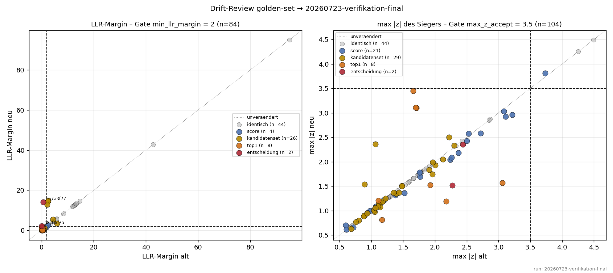
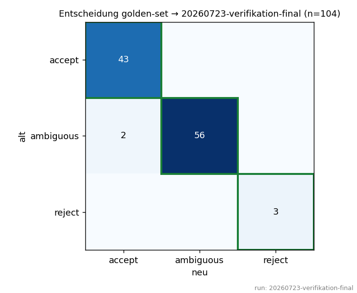
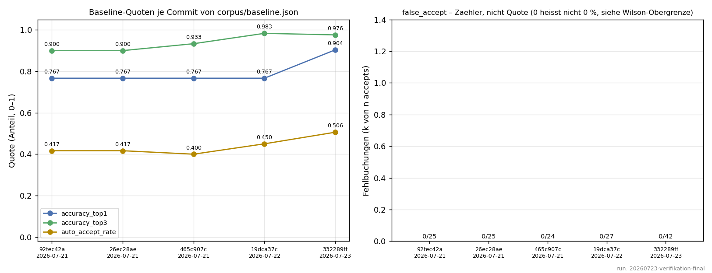
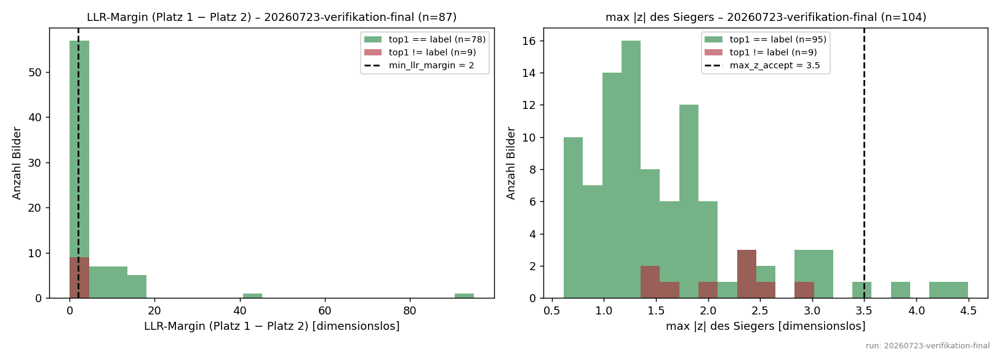
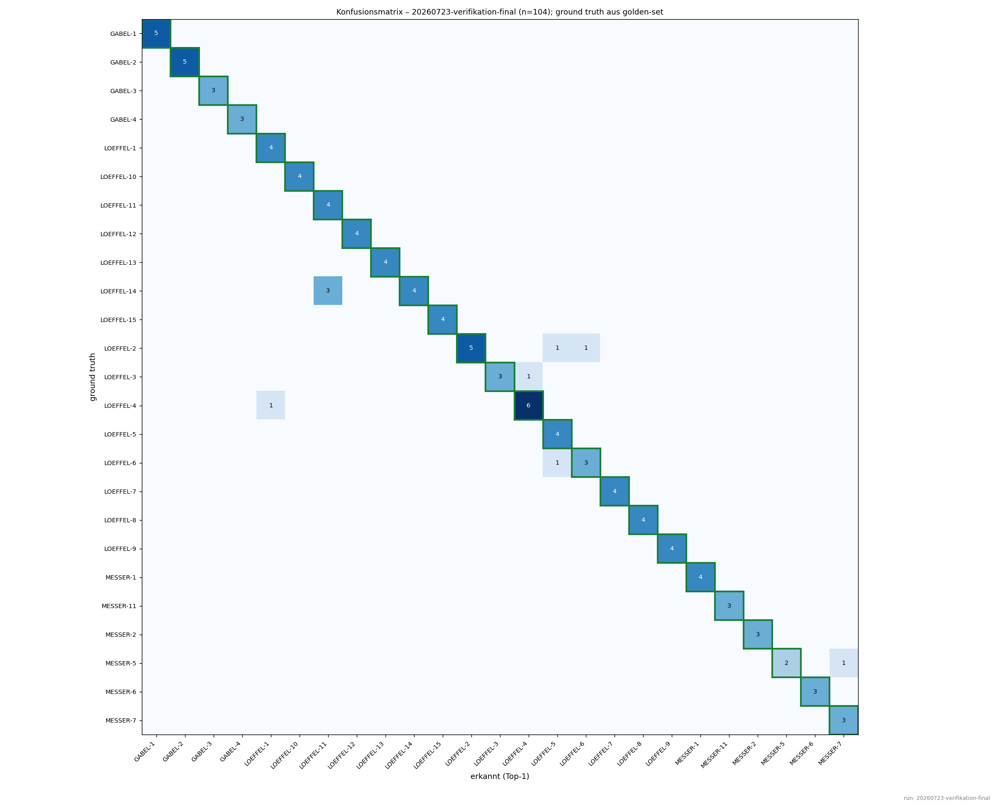
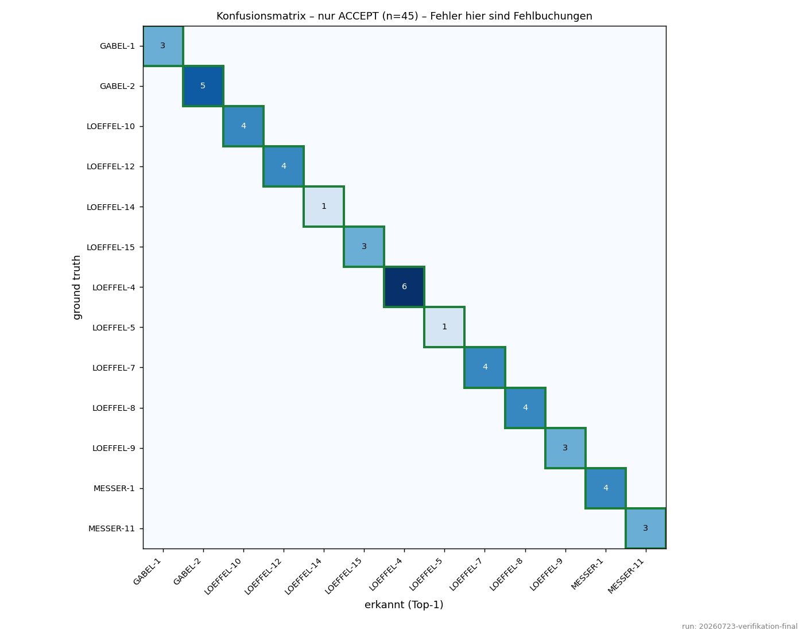
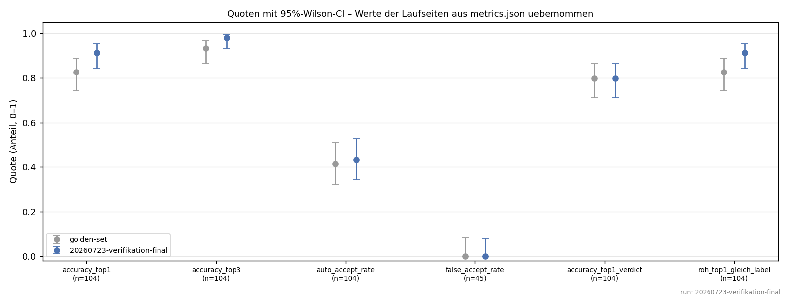

metrics.json bzw. failures/ des Laufs, alle Quoten einer Laufseite aus dessen metrics.json. Nichts davon wird hier nachgerechnet.Neue Fehlbuchungen: 0.
Baender (Urteil des Laufs): PASS: 104 · DRIFT: 0 · FAIL: 0
Aenderungen alt→neu: identisch: 44 · score: 21 · kandidatenset: 29 · top1: 8 · entscheidung: 2
Rang-1-Wechsel: falsch->richtig: 9


| sha8 | band | aenderung | label | decision_alt | decision_neu | top1_alt | top1_neu | llr_margin_alt | llr_margin_neu | max_z_alt | max_z_neu | treiber_neu | treiber_z_neu | delta_status | delta_kategorie |
|---|---|---|---|---|---|---|---|---|---|---|---|---|---|---|---|
| 46f9b1b3 | pass | top1 | LOEFFEL-14 | ambiguous | ambiguous | LOEFFEL-11 | LOEFFEL-14 | 0.4097 | 0.062 | 1.7081 | 3.1014 | hu_log | 3.1014 | akzeptiert | b |
| 4f08405b | pass | top1 | LOEFFEL-1 | ambiguous | ambiguous | LOEFFEL-5 | LOEFFEL-1 | 0.659 | 0.9338 | 3.0603 | 1.5677 | diameter_mm | 1.5677 | akzeptiert | b |
| 53a17205 | pass | top1 | LOEFFEL-11 | ambiguous | ambiguous | LOEFFEL-13 | LOEFFEL-11 | 0.0509 | 0.5885 | 1.1658 | 0.8141 | solidity | 0.8141 | akzeptiert | b |
| 957a3f77 | pass | entscheidung | LOEFFEL-12 | ambiguous | accept | LOEFFEL-12 | LOEFFEL-12 | 0.5547 | 14.1076 | 2.4374 | 2.3548 | diameter_mm | 2.3548 | akzeptiert | a |
| a2883cb7 | pass | top1 | LOEFFEL-1 | ambiguous | ambiguous | LOEFFEL-5 | LOEFFEL-1 | 0.4626 | 0.4904 | 2.1783 | 1.1884 | diameter_mm | 1.1884 | akzeptiert | b |
| a8cf4d7a | pass | entscheidung | LOEFFEL-5 | ambiguous | accept | LOEFFEL-4 | LOEFFEL-5 | 0.0411 | 2.1414 | 2.2739 | 1.5158 | diameter_mm | 1.5158 | akzeptiert | a |
| a8d8c8d7 | pass | top1 | LOEFFEL-3 | ambiguous | ambiguous | LOEFFEL-1 | LOEFFEL-3 | 0.0794 | 0.7997 | 1.6571 | 3.4494 | hu_log | 3.4494 | akzeptiert | b |
| b22df805 | pass | top1 | LOEFFEL-5 | ambiguous | ambiguous | LOEFFEL-4 | LOEFFEL-5 | 0.3221 | 1.0394 | 1.9238 | 1.5208 | solidity | 1.5208 | akzeptiert | b |
| e24cb7e5 | pass | top1 | LOEFFEL-6 | ambiguous | ambiguous | LOEFFEL-1 | LOEFFEL-6 | 0.1734 | 0.0067 | 1.111 | 1.2042 | hist_rim | 1.2042 | akzeptiert | b |
| f649d598 | pass | top1 | LOEFFEL-14 | ambiguous | ambiguous | LOEFFEL-11 | LOEFFEL-14 | 0.3849 | 0.249 | 1.697 | 3.1101 | hu_log | 3.1101 | akzeptiert | b |
Daten: drift_review.csv decision_matrix.csv top1_wechsel.csv neue_fehlbuchungen.csv

| commit | datum | run_id | n | accuracy_top1 | accuracy_top3 | auto_accept_rate | false_accept_rate | betreff |
|---|---|---|---|---|---|---|---|---|
| 92fec42a | 2026-07-21 | baseline-init | 60 | 0.7667 | 0.9 | 0.4167 | 0.0 | feat(corpus): Erstlauf – Manifest und Baseline aus dem vollen Lauf |
| 26ec28ae | 2026-07-21 | final-tier2 | 60 | 0.7667 | 0.9 | 0.4167 | 0.0 | feat(corpus): test-2-loeffel ausgeschlossen, Korpus vollstaendig gruen |
| 465c907c | 2026-07-21 | 20260721-190727 | 60 | 0.7667 | 0.9333 | 0.4 | 0.0 | fix(matcher): Vorfilter fuer laengliche Artikel vergleicht Laenge statt Diagonale |
| 19dca37c | 2026-07-22 | 20260722-floors-baseline | 60 | 0.7667 | 0.9833 | 0.45 | 0.0 | feat(config): gemessene sigma_floors versioniert + Korpus-Waechter gegen lokale Overrides |
| 332289ff | 2026-07-23 | 20260723-baseline-phasec2 | 83 | 0.9036 | 0.9759 | 0.506 | 0.0 | feat(corpus): phase-c2 aufgenommen, Buendel gegen stilles Ueberschreiben |
Daten: baseline_verlauf.csv

Daten: verteilungen.csv



| kennzahl | seite | k | n | p | wilson_lo | wilson_hi | quelle |
|---|---|---|---|---|---|---|---|
| accuracy_top1 | golden-set | 86 | 104 | 0.8269 | 0.7429 | 0.8876 | gerechnet: corpus.report.tier2_quotas() ueber die Golden-Reports |
| accuracy_top3 | golden-set | 97 | 104 | 0.9327 | 0.8675 | 0.967 | gerechnet: corpus.report.tier2_quotas() ueber die Golden-Reports |
| auto_accept_rate | golden-set | 43 | 104 | 0.4135 | 0.3235 | 0.5095 | gerechnet: corpus.report.tier2_quotas() ueber die Golden-Reports |
| false_accept_rate | golden-set | 0 | 43 | 0.0 | 0.0 | 0.082 | gerechnet: corpus.report.tier2_quotas() ueber die Golden-Reports |
| accuracy_top1_verdict | golden-set | 83 | 104 | 0.7981 | 0.711 | 0.864 | gerechnet: corpus.report.tier2_quotas() ueber die Golden-Reports |
| roh_top1_gleich_label | golden-set | 86 | 104 | 0.8269 | 0.7429 | 0.8876 | gerechnet: top1 == label (KEINE Runner-Kennzahl; muss accuracy_top1 entsprechen — Abweichung = metrics.json aus der verdict-Aera) |
| accuracy_top1 | 20260723-verifikation-final | 95 | 104 | 0.9135 | 0.8437 | 0.9538 | runs/20260723-verifikation-final/metrics.json |
| accuracy_top3 | 20260723-verifikation-final | 102 | 104 | 0.9808 | 0.9326 | 0.9947 | runs/20260723-verifikation-final/metrics.json |
| auto_accept_rate | 20260723-verifikation-final | 45 | 104 | 0.4327 | 0.3415 | 0.5286 | runs/20260723-verifikation-final/metrics.json |
| false_accept_rate | 20260723-verifikation-final | 0 | 45 | 0.0 | 0.0 | 0.0787 | runs/20260723-verifikation-final/metrics.json |
| accuracy_top1_verdict | 20260723-verifikation-final | 83 | 104 | 0.7981 | 0.711 | 0.864 | runs/20260723-verifikation-final/metrics.json |
| roh_top1_gleich_label | 20260723-verifikation-final | 95 | 104 | 0.9135 | 0.8437 | 0.9538 | gerechnet: top1 == label (KEINE Runner-Kennzahl; muss accuracy_top1 entsprechen — Abweichung = metrics.json aus der verdict-Aera) |
Daten: quoten.csv confusion_matrix.csv confusion_matrix_accept.csv